Every city was born from play. We simply forgot.모든 도시는 놀이에서 태어났다. 다만 그것을 잊었을 뿐이다.
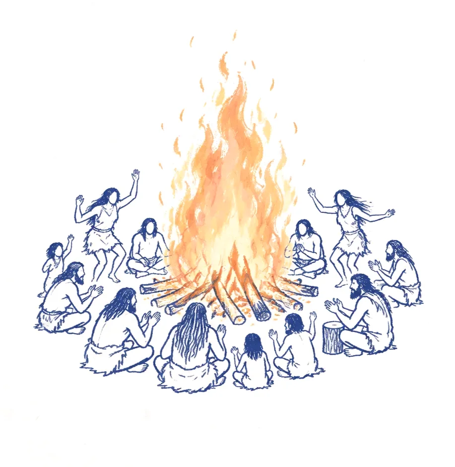
Prologue
프롤로그
The City Was a Great Fire도시는 거대한 모닥불이었다
In the beginning, each person stood alone. Two sat around a single fire, then three, then many. They gathered to sing and dance, building memories together. The gathering grew into a city.태초에 사람은 혼자였다. 불 하나를 가운데 두고 둘이 앉았고, 셋이 되고, 여럿이 되었다. 모여서 노래하고, 춤추고, 함께 기억을 쌓았다. 그 모임이 자라 도시가 되었다.
The city was born from play.도시는, 놀이에서 태어났다.
02
A City Without Myth신화가 사라진 도시
The city forgot why it was created도시는, 처음 만들어진 이유를 잊었다
As cities became more perfect, people grew more isolated. They live in the same buildings without knowing one another’s faces. Songs, dancing and spontaneous laughter disappeared. This is true of Seoul, Tokyo and every city we live in.완벽해질수록 사람들은 더 혼자가 되었다. 같은 건물에 살며 서로의 얼굴을 모른다. 노래가, 춤이, 이유 없는 웃음이 사라졌다. 서울이 그렇고, 도쿄가 그렇고, 우리가 사는 모든 도시가 그렇다.
The fire never went out. We simply forgot how to gather around it.불은 꺼지지 않았다. 우리가 둘레에 앉는 법을 잊었을 뿐이다.
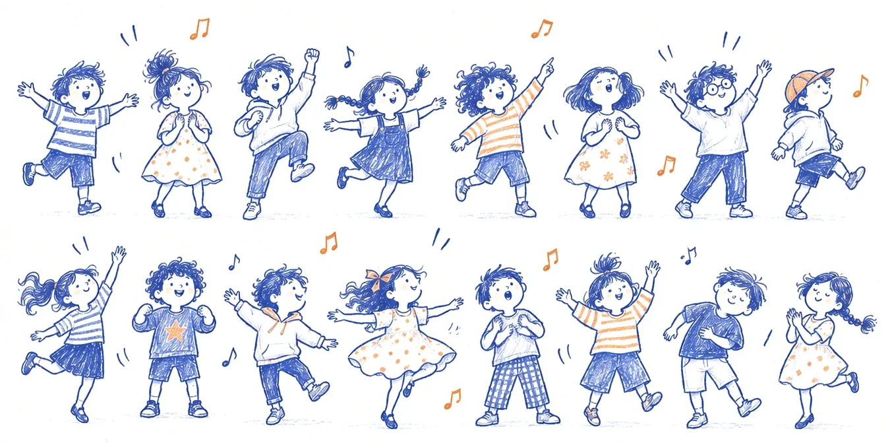
03
Three Questions세 가지 질문
Why do we live?왜 살아야 하는가Life생명
How should we live?어떻게 살아야 하는가Play
What can we become?무엇이 되어야 하는가Transformation변화
Life awakens imagination, and through play, imagination creates a new reality. NORY CITY is where this cycle comes to life.생명이 상상력을 움직이고, 그 상상력이 놀이를 통해 새로운 현실을 가져온다. NORY CITY는 이 순환이 일어나는 곳이다.
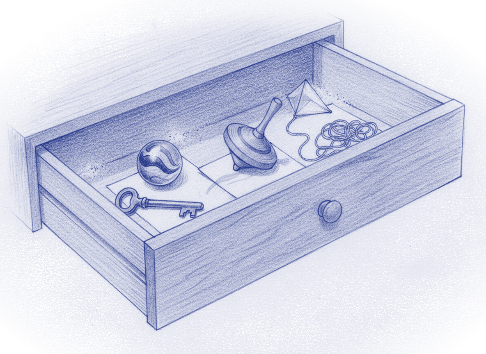
04
노리개 · Norigae노리개 · Norigae
In a drawer, things we forgot we had forgotten서랍 속, 잊은 줄도 몰랐던 것들
A key whose lock has been forgotten. A tangled spool of thread. A kite that never flew. A top that stopped spinning. A marble that still catches the light. We call them Norigae.무슨 자물쇠에 쓰는지 잊은 열쇠. 엉킨 실 한 타래. 한 번도 날리지 못한 연. 멈춘 팽이. 빛이 도는 구슬. 우리는 이것을 노리개라 부른다.
They are the objects that carry us across the gray city and into NORY CITY.회색 도시를 건너 노리시티로 가는 도구들이다.
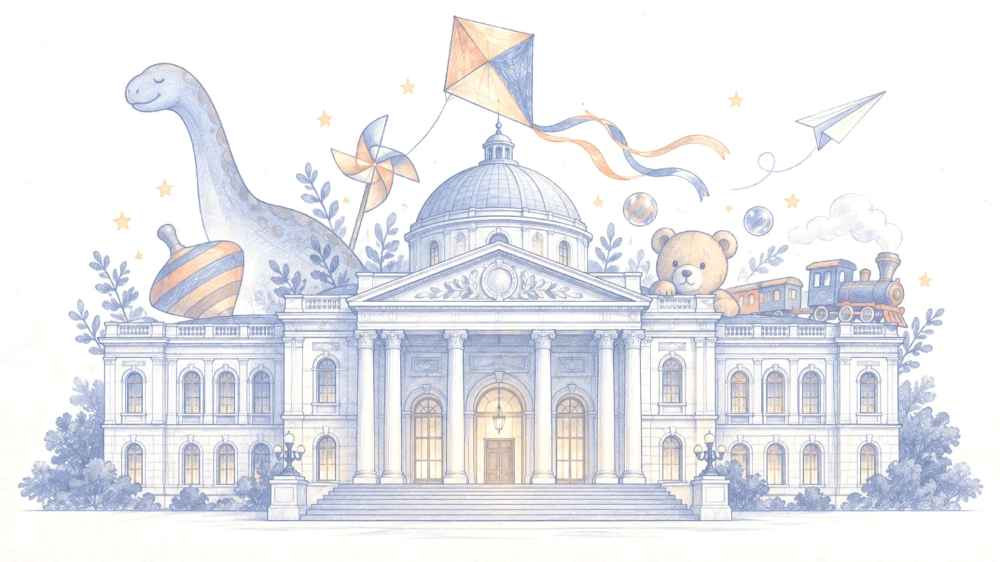
05
The Museum박물관
Where memories of play sleep놀이의 기억이 잠든 곳
Somewhere in the city stands an old, unremarkable museum. One by one, it holds the things you left behind as you grew older. Everything you once considered useless has come here to sleep.도시 어딘가, 화려하지 않은 낡은 박물관. 당신이 어른이 되며 하나씩 내려놓은 것들 — 쓸모없다 여긴 것들이 모두 여기 와서 잠들어 있다.
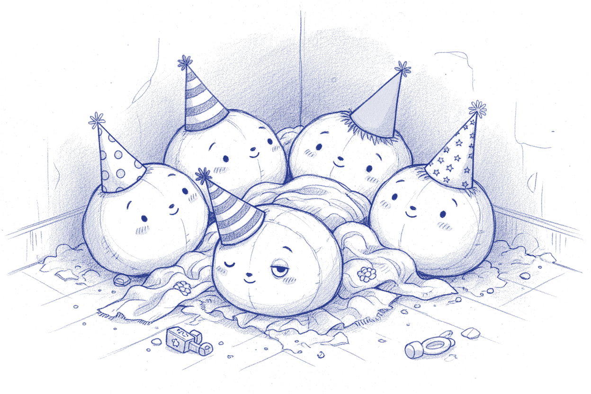
06
Nori-ai · 戏梦 · Ludic · 游心
Our happiest forgotten memories우리가 잊은 가장 행복했던 기억들
The first day you ran farther than ever before. The day you made something with your own hands and offered it to someone. An afternoon when you laughed until tears came for no reason. Five figures wearing party hats sleep in a corner of the museum. They are the happiest memories of play we once knew. As you approach, one of them opens its eyes and recognizes you.처음 멀리까지 달려본 날. 두 손으로 무언가를 만들어 누군가에게 내밀던 날. 이유도 없이 눈물 나게 웃던 어느 오후. 꼬깔모자를 쓰고 박물관 구석에 잠든 다섯은 — 우리가 가장 즐겁게 놀았던, 가장 행복했던 기억들이다. 당신이 다가가면, 그중 하나가 눈을 뜨고 당신을 알아본다.
두근RhythmThe memory of the first time your heart raced.처음 심장이 뛰던 순간의 기억.
달음MotionThe memory of first running far on your own two feet.처음 두 발로 멀리 달려나가던 순간의 기억.
외침VoiceThe memory of first using your voice as loud as you could.처음 목소리를 마음껏 내질러본 순간의 기억.
꼼지락ImagineThe memory of first making something with your hands.처음 무언가를 손으로 만들어낸 순간의 기억.
이음ConnectionThe memory of first holding someone’s hand.처음 누군가와 손을 맞잡던 순간의 기억.
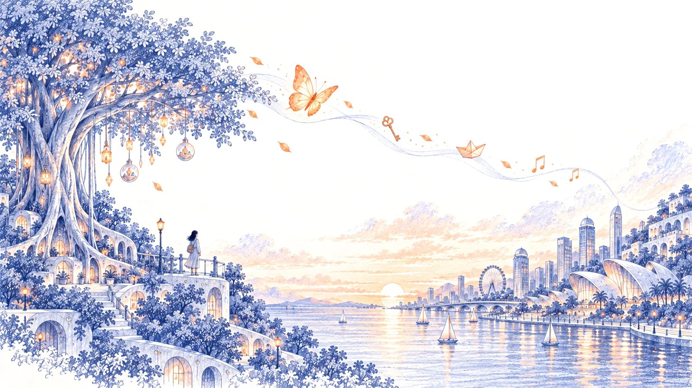
07
Baram · The Wind바람 · The Wind
The call부름
One day, the wind begins to blow. It has no shape and cannot be held, yet everyone can feel it. The wind knows where sleeping memories lie. It brings breath back to what has dried.어느 날, 바람이 분다. 형태도 없이, 잡을 수도 없이, 그러나 누구나 느낀다. 잠든 기억이 있는 곳을 아는 바람. 마른 것 위로 다시 부는 숨.
This wind is the call of NORY CITY.이 바람이 노리시티의 부름이다.
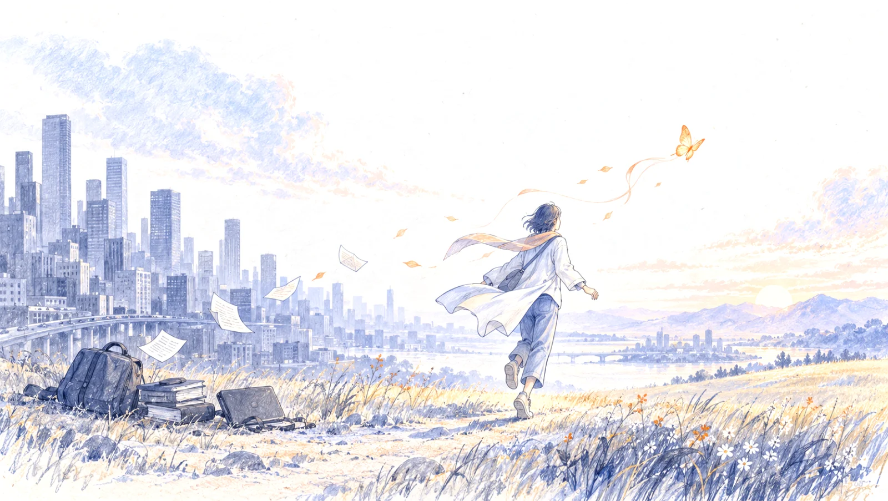
08
Norian
노리안 · Norian
The one who hears the call, a butterfly부름을 들은 사람, 한마리 나비
The wind does not blow for everyone. It comes only to those who still long for something. A person leaves the gray city and follows the wind. If you have heard the call, you are already a Norian.바람은 아무에게나 불지 않는다. 아직 무언가를 그리워하는 사람에게만 분다. 회색 도시를 떠나 찾아온 사람 — 당신이 그 부름을 들었다면, 당신은 이미 노리안이다.
We call a person carried by the wind NABI, the butterfly. The more they let go, the lighter they become. The farther they follow, the more they begin to change.바람에 실려 가는 한 사람, 우리는 그 모습을 나비(NABI)라 부른다. 무거운 것을 내려놓을수록 가벼워지고, 따라갈수록 다른 무언가가 되어 간다.
Am I following the butterfly, or am I becoming one?나는 나비를 따라가는가, 내가 나비가 되어 가는가.
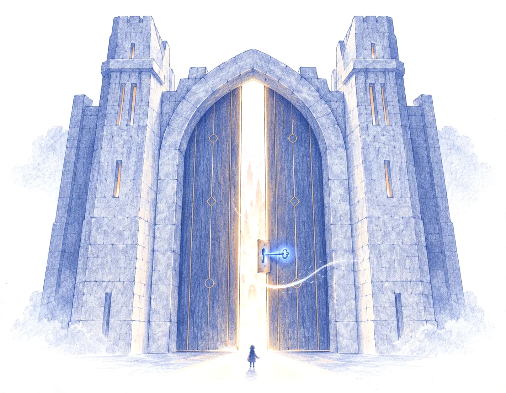
09
The Threshold · Baram Gate경계 · BARAM 문
The gate opened by a blue key푸른 열쇠로 여는 문
When the wind blows, a thin boundary appears within the city. On one side lies the gray city. On the other, the light of another world. Within this boundary, the rules of the outside world fall silent for a moment: be fast, be useful, stand alone.바람이 부는 날, 도시에 얇은 경계가 생긴다. 한쪽엔 회색 도시, 다른 쪽엔 다른 도시의 빛. 그 경계 안에서는 바깥의 규칙 — 빠를 것, 쓸모 있을 것, 혼자일 것 — 이 잠시 멈춘다.
The blue key you have carried for years opens the gate. The wind enters first.오래전부터 당신이 가지고 있던 푸른 열쇠로 문이 열리고, 바람이 먼저 들어간다.
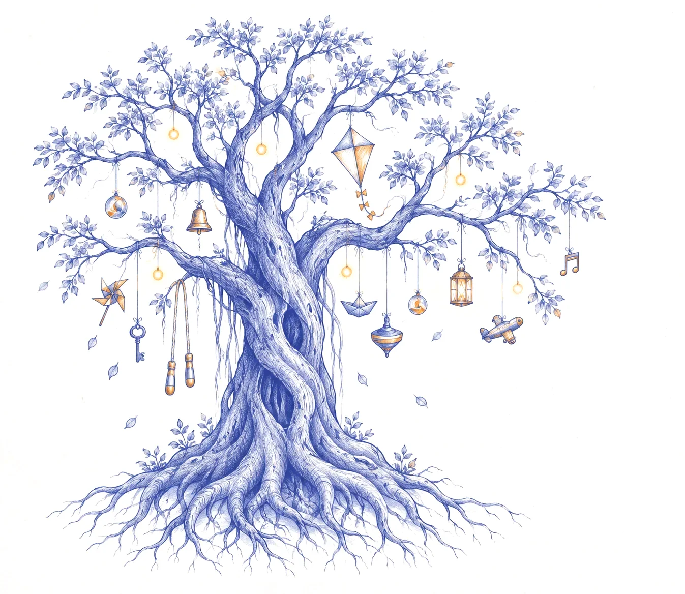
10
Memory Tree · Banyan Tree메모리 트리 · Banyan Tree
The Memory Tree
기억의 나무
At the heart of the threshold stands a single tree. It is not a stage, but the axis at the center of this world. Its roots reach beneath the city into forgotten memories. Memories hang like lights from every branch.경계 안, 그 한가운데에 나무 한 그루가 선다. 무대가 아니라 세계의 중심 축이다. 뿌리는 도시의 땅속, 잊힌 기억까지 닿는다. 가지마다 기억이 빛으로 걸린다.
You tie your memory with a thread and place it on the tree.당신은 기억의 실로 당신의 추억을 묶어, 그 가지에 건다.
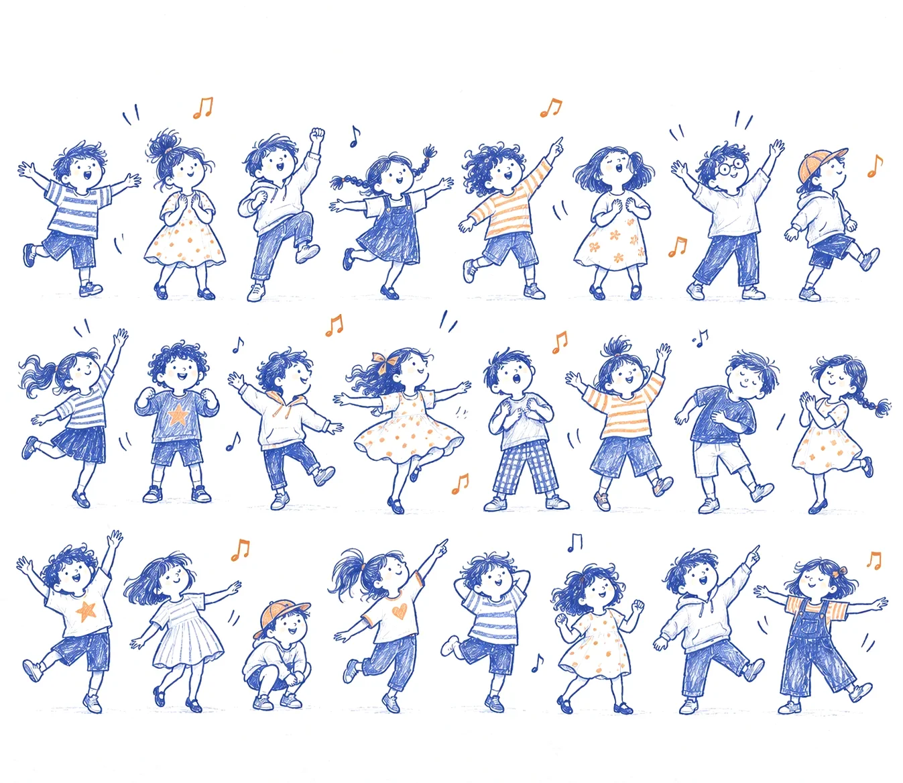
11
Saver
세이버 · Saver
The song that protects the city도시를 지키는 노래
The Saver protects memory through music. The song sung by the greatest number of people takes the stage that night. As the Saver sings, the Memory Tree awakens and fills with light.음악으로 기억을 지키는 수호신. 가장 많이 불린 노래가 그 밤의 무대에 선다. 세이버가 노래하는 동안, 메모리 트리가 깨어나고 나무 전체가 환해진다.
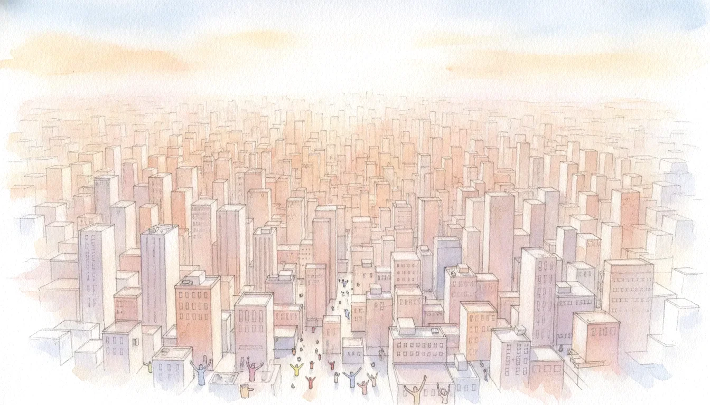
12
Where the Winds Gather바람이 모이는 곳
In that moment, the city becomes NORY CITY그 순간, 도시는 NORY CITY가 된다
The space within the boundary fills with people, and thousands breathe to the same beat. NORY CITY is not a place. It is created by the people who gather within it. The forgotten circle comes alive again. The energy buried beneath the gray city bursts into song, dance and color.경계 안이 사람으로 가득 차고, 수천 명이 같은 비트에 숨을 내쉰다. 노리시티는 장소가 아니다 — 그 안에 모인 사람들이 노리시티를 만든다. 잊혔던 둥근 자리가 다시 살아난다. 회색 도시에 묻혀 있던 생명력이 노래가 되고, 춤이 되고, 색이 되어 터져 나온다.
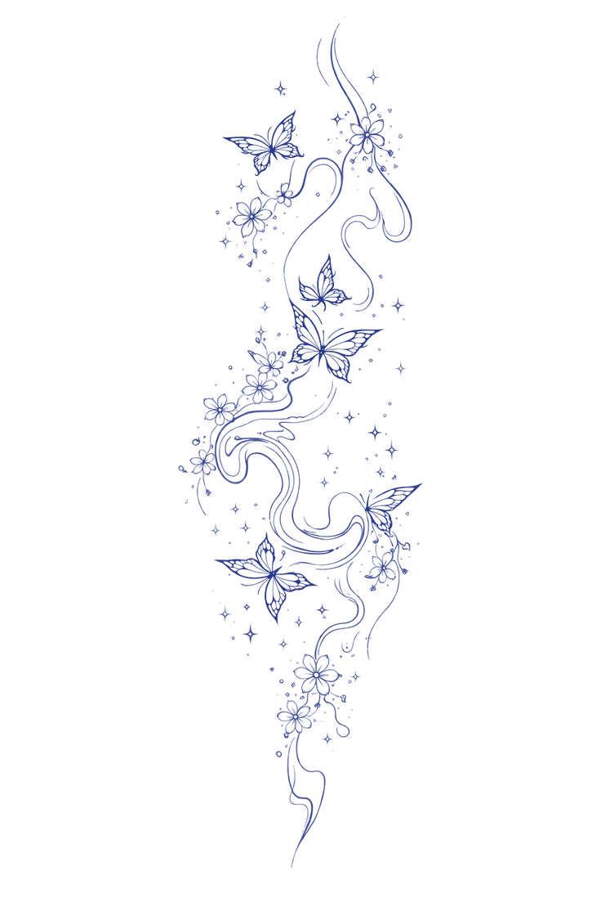
13
The Return다시, 돌아온다
What do we take home?무엇을 가지고 돌아가는가
At dawn, the boundary closes and people return to the same streets. Yet a small ember remains within them. As long as it glows, everyday life feels different.새벽이 오면 경계는 닫히고, 사람들은 같은 거리로 돌아간다. 그러나 가슴엔 작은 불씨가 남는다. 그것이 있는 한, 일상은 조금 다르게 버텨진다.
NABI rides the wind back to the gray city. Somewhere, that ember creates another circle.나비는 다시 바람에 실려 회색 도시로 돌아가고, 그 불씨로 어딘가에 또 하나의 둥근 자리가 생긴다.
The festival returns. See you next city.축제는 다시 돌아온다. See you next city.